Experiment result
Critical difference
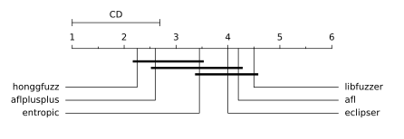
Micro-benchmark Critical difference
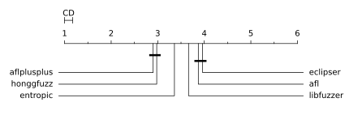
| Fuzzer | Rank |
|---|
| aflplusplus | 2.90 |
| honggfuzz | 2.98 |
| entropic | 3.36 |
| libfuzzer | 3.66 |
| afl | 3.87 |
| eclipser | 3.96 |
Overall (ranking by edges covered)
- honggfuzz (391,332 edges covered), success rate: 40.51%(805/1987 pairs)
- aflplusplus (387,485 edges covered), success rate: 40.30%(802/1990 pairs)
- entropic (372,263 edges covered), success rate: 39.02%(775/1986 pairs)
- eclipser (370,193 edges covered), success rate: 36.04%(718/1992 pairs)
- afl (363,300 edges covered), success rate: 36.95%(733/1984 pairs)
- libfuzzer (356,249 edges covered), success rate: 36.78%(730/1985 pairs)
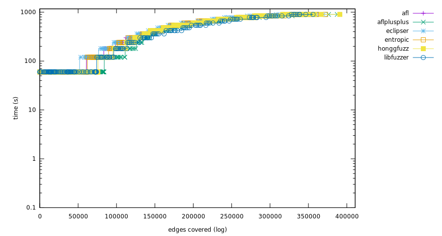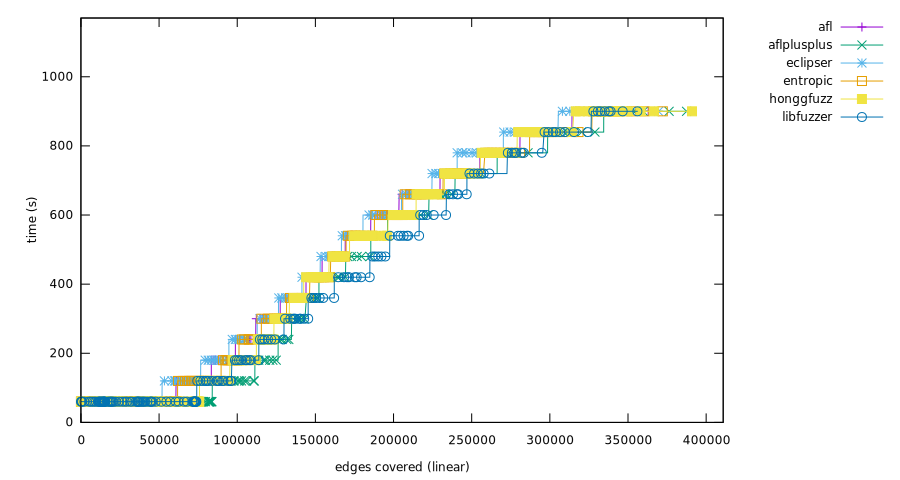
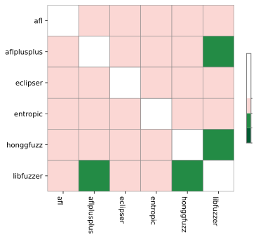
bloaty_fuzz_target
Ranking
- eclipser, (17,766 edges covered), success rate: 16.00%(16/100 pairs)
- afl, (15,257 edges covered), success rate: 15.00%(15/100 pairs)
- entropic, (14,953 edges covered), success rate: 16.33%(16/98 pairs)
- honggfuzz, (13,431 edges covered), success rate: 17.35%(17/98 pairs)
- libfuzzer, (13,402 edges covered), success rate: 11.22%(11/98 pairs)
- aflplusplus, (11,948 edges covered), success rate: 9.00%(9/100 pairs)
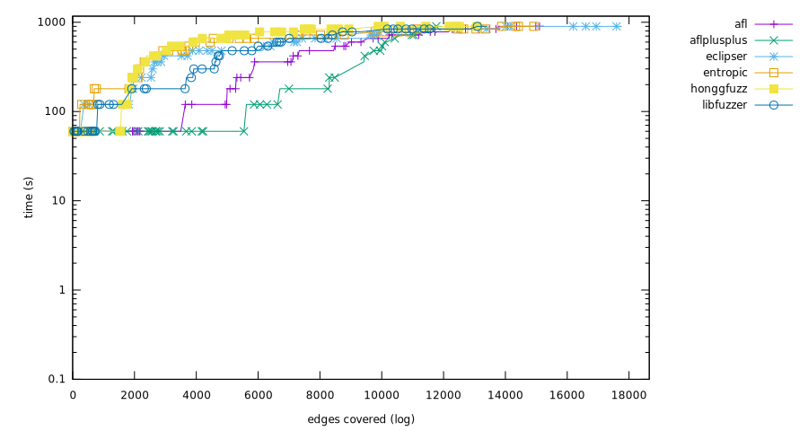 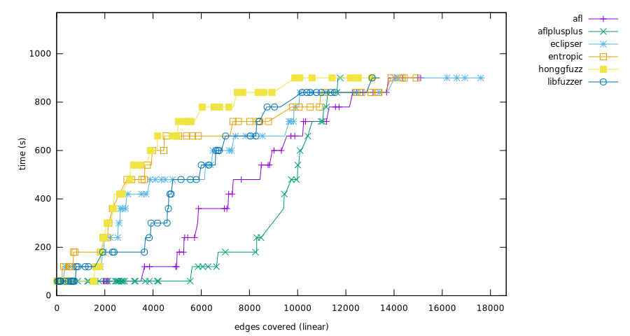
Mann-Whitney U test
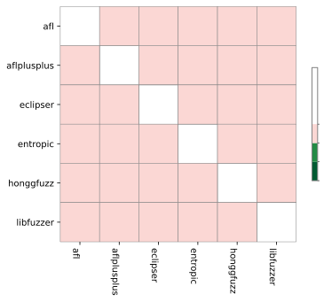
curl_curl_fuzzer_http
Ranking
- aflplusplus, (32,546 edges covered), success rate: 19.19%(19/99 pairs)
- honggfuzz, (30,573 edges covered), success rate: 17.00%(17/100 pairs)
- afl, (29,443 edges covered), success rate: 10.10%(10/99 pairs)
- eclipser, (29,390 edges covered), success rate: 11.22%(11/98 pairs)
- entropic, (28,798 edges covered), success rate: 12.00%(12/100 pairs)
- libfuzzer, (27,782 edges covered), success rate: 8.00%(8/100 pairs)
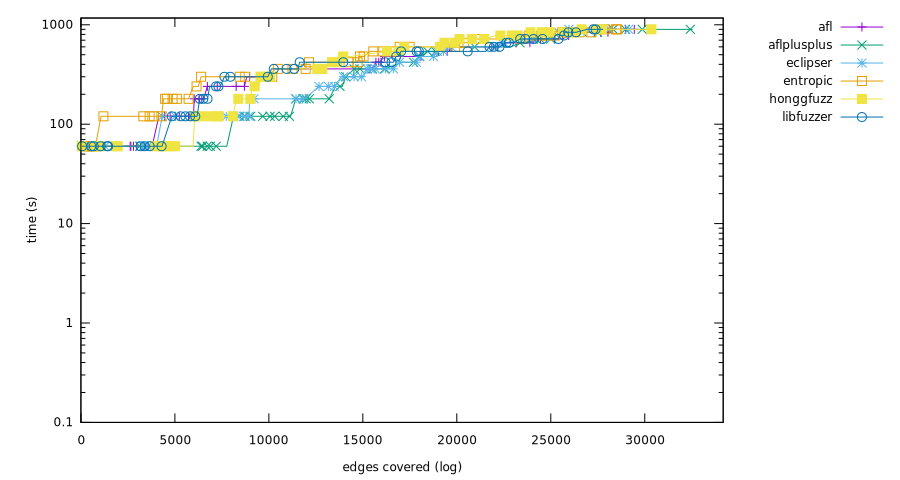 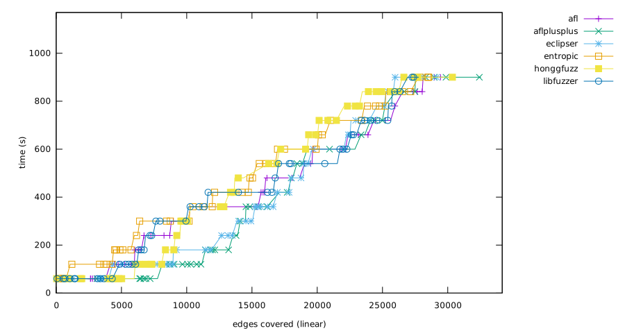
Mann-Whitney U test
freetype2-2017
Ranking
- honggfuzz, (26,333 edges covered), success rate: 14.00%(14/100 pairs)
- aflplusplus, (25,052 edges covered), success rate: 12.00%(12/100 pairs)
- eclipser, (19,680 edges covered), success rate: 12.00%(12/100 pairs)
- entropic, (17,651 edges covered), success rate: 10.10%(10/99 pairs)
- afl, (17,428 edges covered), success rate: 8.00%(8/100 pairs)
- libfuzzer, (17,188 edges covered), success rate: 8.00%(8/100 pairs)
 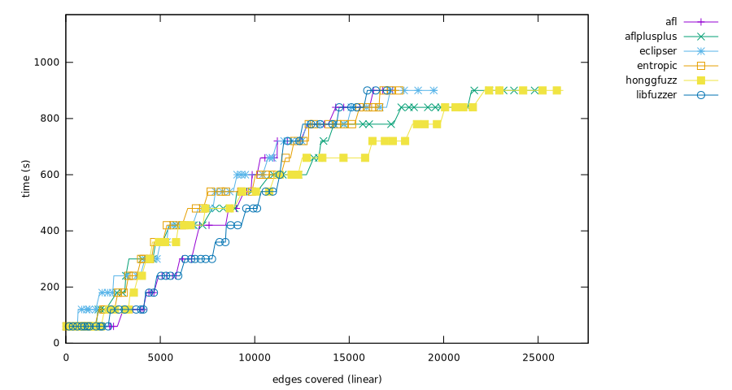
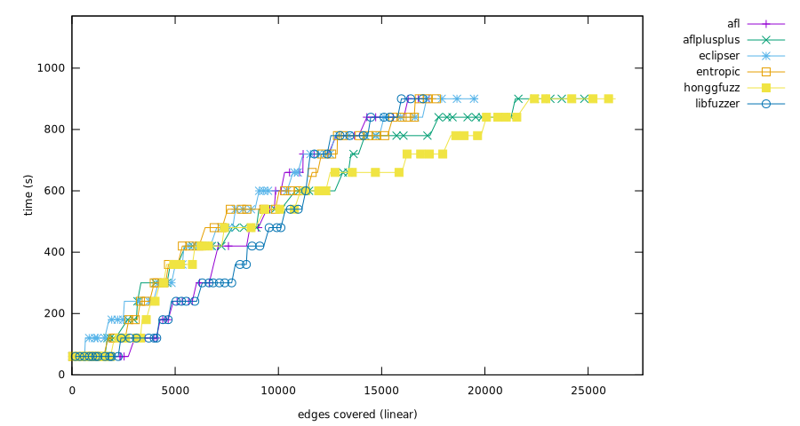
Mann-Whitney U test
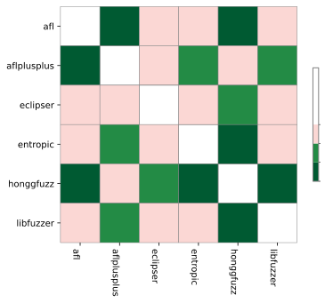
harfbuzz-1.3.2
Ranking
- honggfuzz, (24,103 edges covered), success rate: 17.00%(17/100 pairs)
- aflplusplus, (22,688 edges covered), success rate: 15.00%(15/100 pairs)
- afl, (20,351 edges covered), success rate: 16.33%(16/98 pairs)
- eclipser, (20,245 edges covered), success rate: 16.16%(16/99 pairs)
- entropic, (19,279 edges covered), success rate: 15.00%(15/100 pairs)
- libfuzzer, (18,782 edges covered), success rate: 14.00%(14/100 pairs)
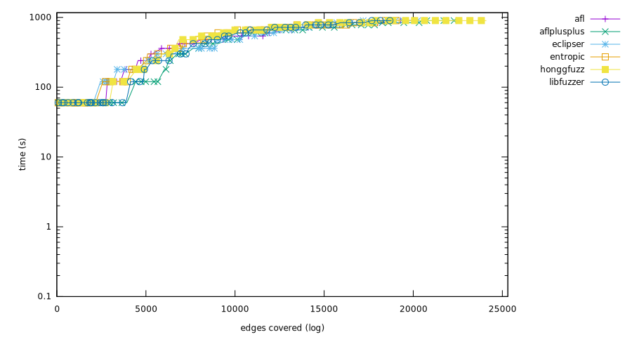 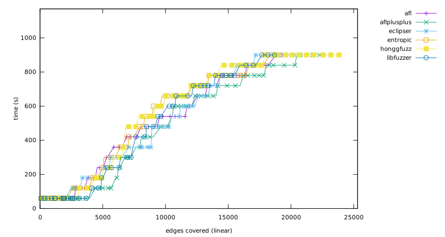
Mann-Whitney U test
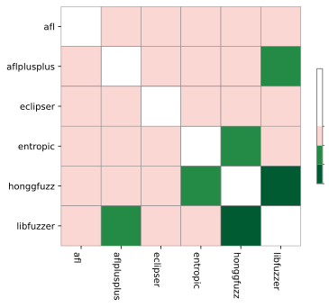
jsoncpp_jsoncpp_fuzzer
Ranking
- honggfuzz, (3,726 edges covered), success rate: 100.00%(99/99 pairs)
- libfuzzer, (3,723 edges covered), success rate: 97.00%(97/100 pairs)
- aflplusplus, (3,703 edges covered), success rate: 94.00%(94/100 pairs)
- afl, (3,689 edges covered), success rate: 97.98%(97/99 pairs)
- eclipser, (3,651 edges covered), success rate: 96.97%(96/99 pairs)
- entropic, (3,624 edges covered), success rate: 100.00%(99/99 pairs)
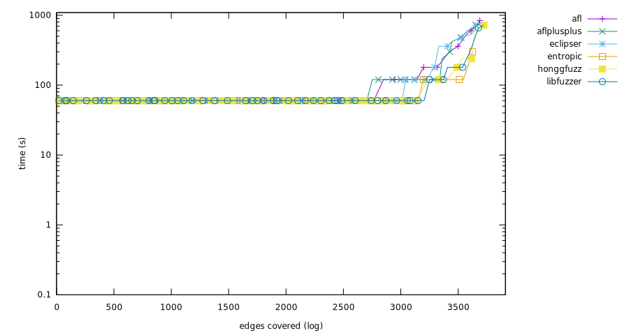 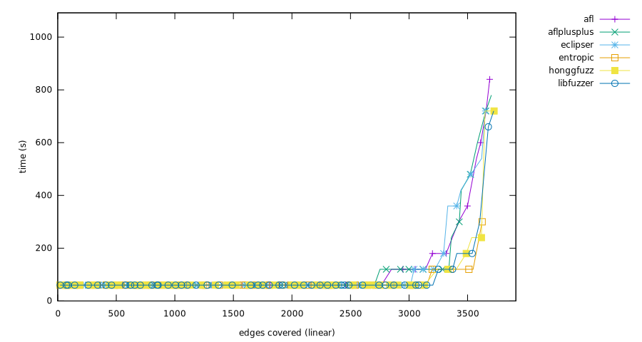
Mann-Whitney U test
lcms-2017-03-21
Ranking
- aflplusplus, (13,986 edges covered), success rate: 20.00%(20/100 pairs)
- honggfuzz, (13,513 edges covered), success rate: 24.24%(24/99 pairs)
- eclipser, (11,896 edges covered), success rate: 15.00%(15/100 pairs)
- entropic, (11,022 edges covered), success rate: 21.00%(21/100 pairs)
- afl, (10,824 edges covered), success rate: 19.39%(19/98 pairs)
- libfuzzer, (10,666 edges covered), success rate: 17.00%(17/100 pairs)
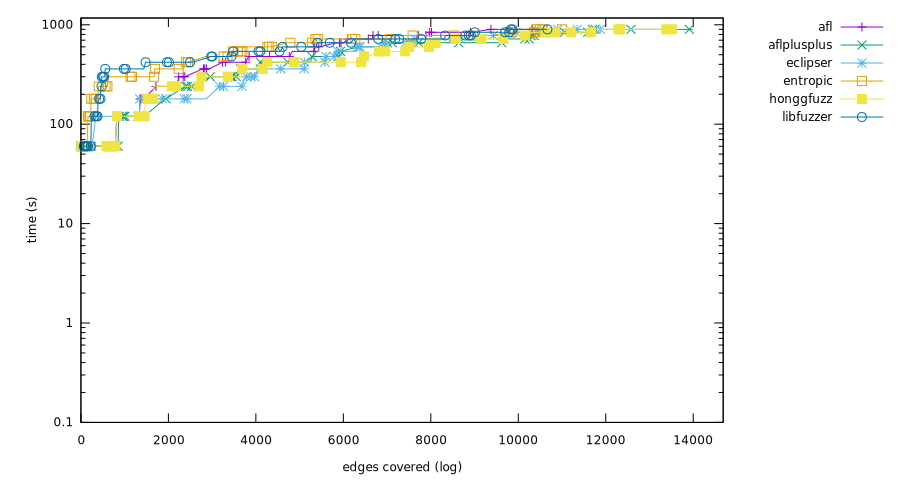 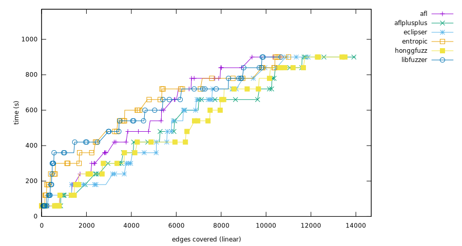
Mann-Whitney U test
libjpeg-turbo-07-2017
Ranking
- aflplusplus, (9,666 edges covered), success rate: 51.52%(51/99 pairs)
- eclipser, (8,195 edges covered), success rate: 45.00%(45/100 pairs)
- afl, (8,044 edges covered), success rate: 46.00%(46/100 pairs)
- honggfuzz, (7,212 edges covered), success rate: 36.36%(36/99 pairs)
- entropic, (7,103 edges covered), success rate: 36.00%(36/100 pairs)
- libfuzzer, (5,408 edges covered), success rate: 29.00%(29/100 pairs)
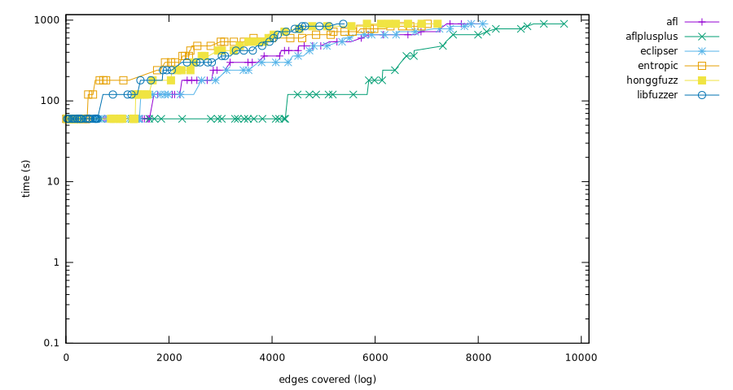 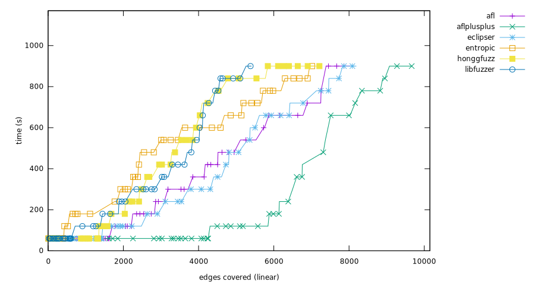
Mann-Whitney U test
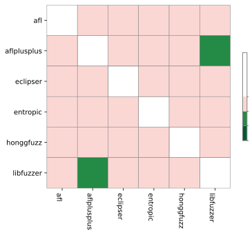
libpcap_fuzz_both
Ranking
- honggfuzz, (19,944 edges covered), success rate: 41.41%(41/99 pairs)
- entropic, (19,558 edges covered), success rate: 36.36%(36/99 pairs)
- aflplusplus, (19,513 edges covered), success rate: 41.41%(41/99 pairs)
- libfuzzer, (18,459 edges covered), success rate: 36.08%(35/97 pairs)
- eclipser, (17,131 edges covered), success rate: 32.32%(32/99 pairs)
- afl, (16,785 edges covered), success rate: 36.00%(36/100 pairs)
 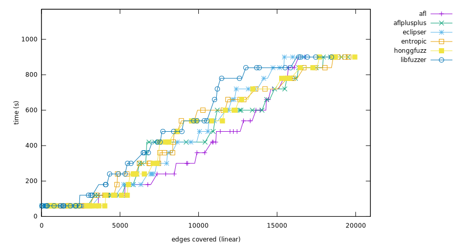
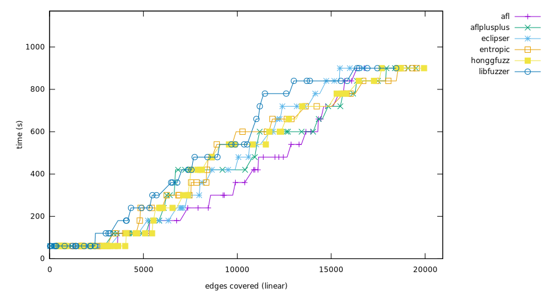
Mann-Whitney U test
libpng-1.2.56
Ranking
- aflplusplus, (6,484 edges covered), success rate: 76.00%(76/100 pairs)
- honggfuzz, (5,763 edges covered), success rate: 65.00%(65/100 pairs)
- entropic, (5,713 edges covered), success rate: 61.00%(61/100 pairs)
- afl, (5,431 edges covered), success rate: 62.63%(62/99 pairs)
- libfuzzer, (5,353 edges covered), success rate: 53.54%(53/99 pairs)
- eclipser, (5,307 edges covered), success rate: 61.00%(61/100 pairs)
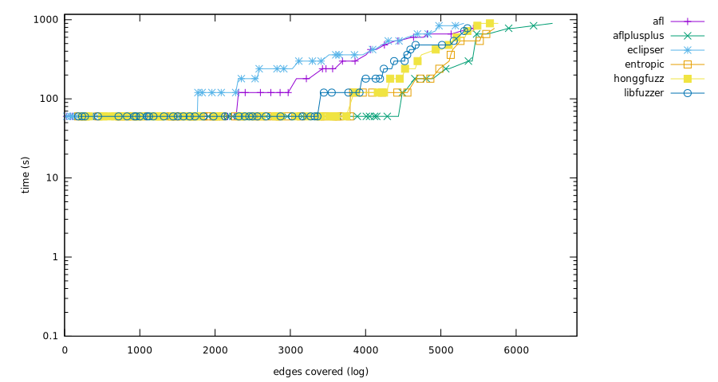 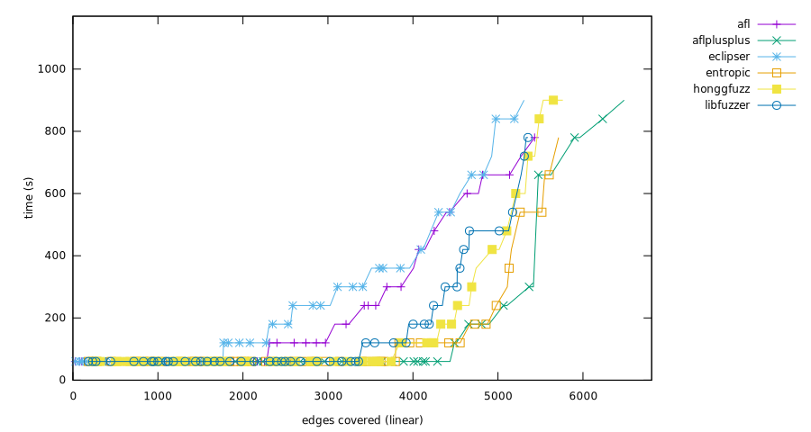
Mann-Whitney U test
libxml2-v2.9.2
Ranking
- honggfuzz, (32,245 edges covered), success rate: 62.63%(62/99 pairs)
- eclipser, (30,507 edges covered), success rate: 52.00%(52/100 pairs)
- aflplusplus, (30,452 edges covered), success rate: 48.00%(48/100 pairs)
- afl, (29,977 edges covered), success rate: 51.00%(51/100 pairs)
- entropic, (29,571 edges covered), success rate: 46.46%(46/99 pairs)
- libfuzzer, (27,392 edges covered), success rate: 38.38%(38/99 pairs)
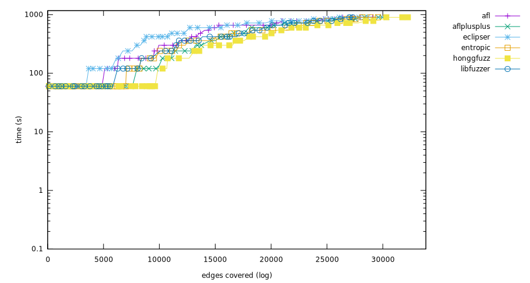 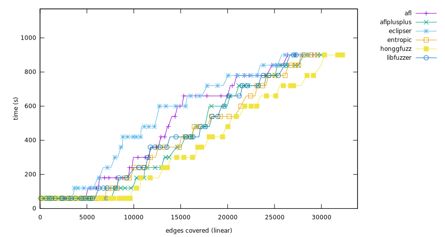
Mann-Whitney U test
libxslt_xpath
Ranking
- aflplusplus, (21,918 edges covered), success rate: 34.00%(34/100 pairs)
- honggfuzz, (20,335 edges covered), success rate: 30.00%(30/100 pairs)
- eclipser, (20,294 edges covered), success rate: 28.00%(28/100 pairs)
- libfuzzer, (20,253 edges covered), success rate: 33.00%(33/100 pairs)
- entropic, (20,188 edges covered), success rate: 30.30%(30/99 pairs)
- afl, (20,110 edges covered), success rate: 28.57%(28/98 pairs)
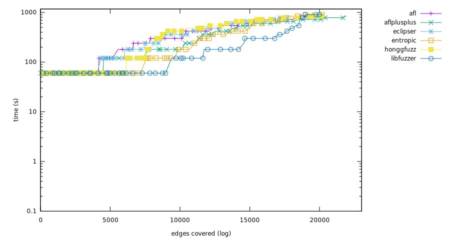 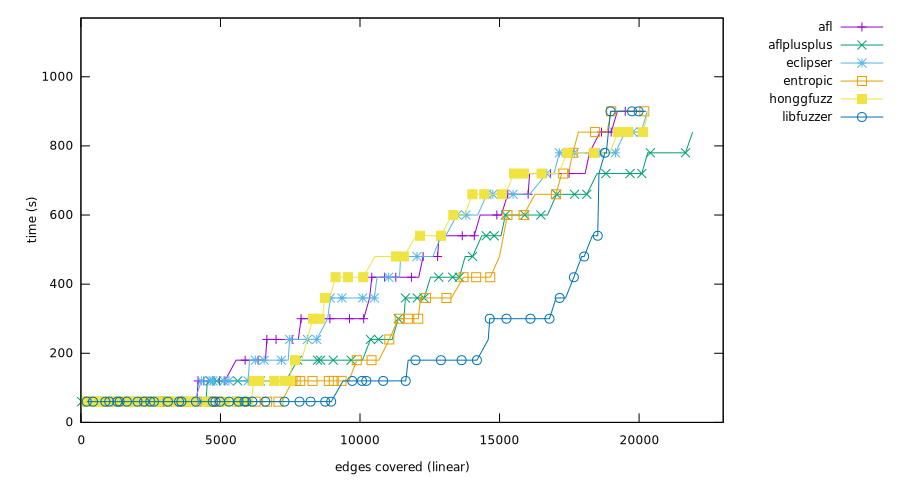
Mann-Whitney U test
mbedtls_fuzz_dtlsclient
Ranking
- aflplusplus, (4,513 edges covered), success rate: 38.38%(38/99 pairs)
- honggfuzz, (3,923 edges covered), success rate: 34.00%(34/100 pairs)
- afl, (3,710 edges covered), success rate: 31.31%(31/99 pairs)
- entropic, (3,545 edges covered), success rate: 33.00%(33/100 pairs)
- eclipser, (3,462 edges covered), success rate: 29.00%(29/100 pairs)
- libfuzzer, (2,644 edges covered), success rate: 30.30%(30/99 pairs)
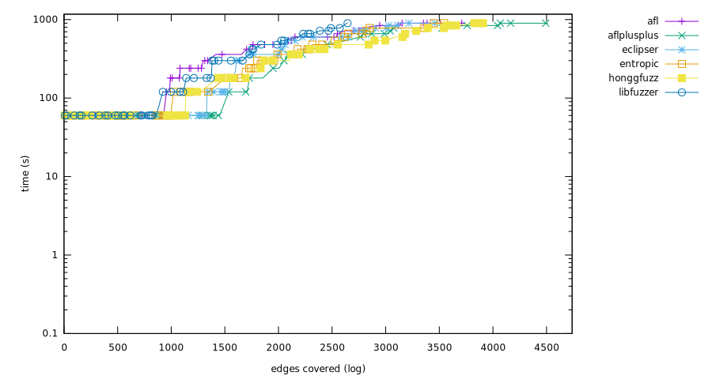 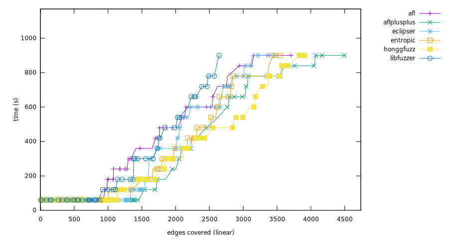
Mann-Whitney U test
openssl_x509
Ranking
- entropic, (11,279 edges covered), success rate: 12.00%(12/100 pairs)
- libfuzzer, (10,686 edges covered), success rate: 9.00%(9/100 pairs)
- aflplusplus, (9,448 edges covered), success rate: 9.18%(9/98 pairs)
- afl, (8,823 edges covered), success rate: 10.10%(10/99 pairs)
- honggfuzz, (7,827 edges covered), success rate: 9.09%(9/99 pairs)
- eclipser, (7,728 edges covered), success rate: 10.00%(10/100 pairs)
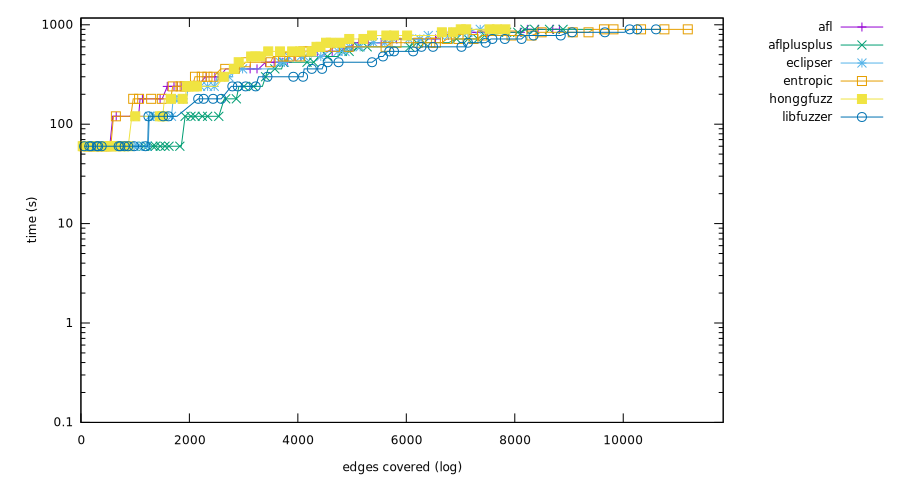 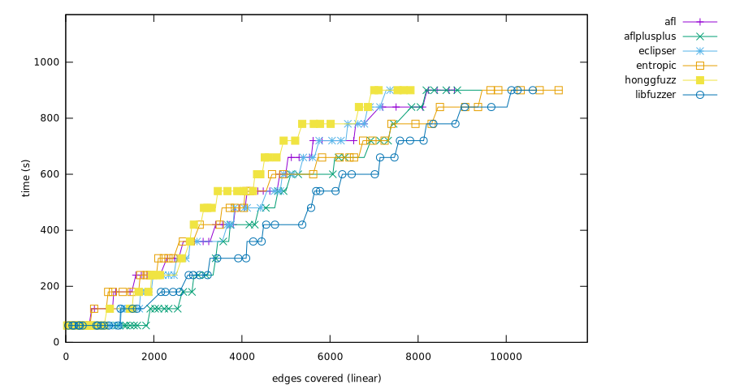
Mann-Whitney U test
openthread-2019-12-23
Ranking
- libfuzzer, (9,685 edges covered), success rate: 69.70%(69/99 pairs)
- entropic, (9,472 edges covered), success rate: 69.70%(69/99 pairs)
- aflplusplus, (9,458 edges covered), success rate: 66.67%(66/99 pairs)
- afl, (9,321 edges covered), success rate: 60.20%(59/98 pairs)
- eclipser, (9,275 edges covered), success rate: 63.00%(63/100 pairs)
- honggfuzz, (9,165 edges covered), success rate: 56.00%(56/100 pairs)
 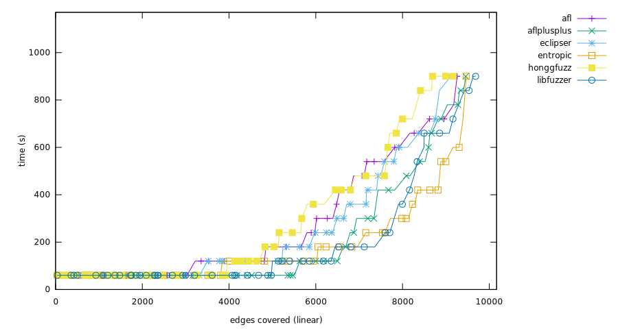
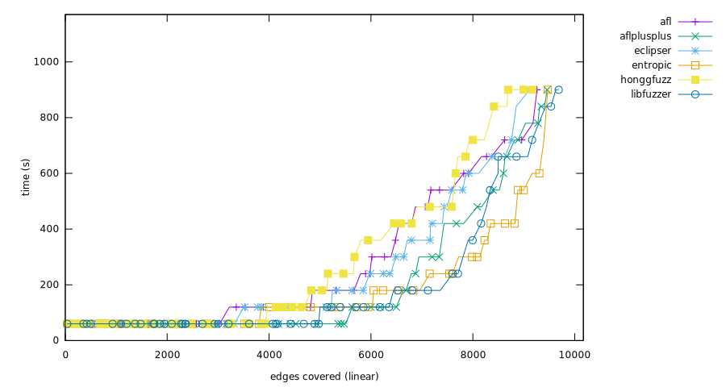
Mann-Whitney U test
php_php-fuzz-parser
Ranking
- honggfuzz, (46,450 edges covered), success rate: 14.14%(14/99 pairs)
- entropic, (45,533 edges covered), success rate: 13.27%(13/98 pairs)
- aflplusplus, (43,286 edges covered), success rate: 16.00%(16/100 pairs)
- afl, (42,285 edges covered), success rate: 12.00%(12/100 pairs)
- eclipser, (42,204 edges covered), success rate: 8.00%(8/100 pairs)
- libfuzzer, (41,886 edges covered), success rate: 13.13%(13/99 pairs)
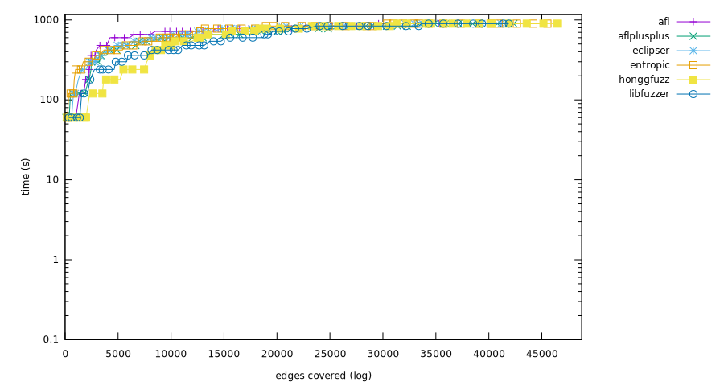 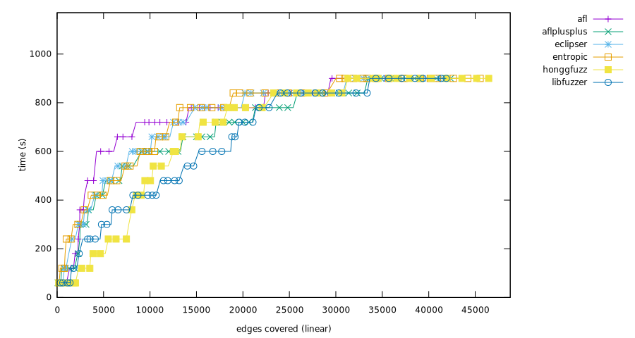
Mann-Whitney U test
proj4-2017-08-14
Ranking
- honggfuzz, (8,766 edges covered), success rate: 60.00%(60/100 pairs)
- entropic, (8,528 edges covered), success rate: 62.63%(62/99 pairs)
- libfuzzer, (8,329 edges covered), success rate: 61.46%(59/96 pairs)
- aflplusplus, (8,164 edges covered), success rate: 41.84%(41/98 pairs)
- eclipser, (7,987 edges covered), success rate: 28.00%(28/100 pairs)
- afl, (7,871 edges covered), success rate: 36.00%(36/100 pairs)
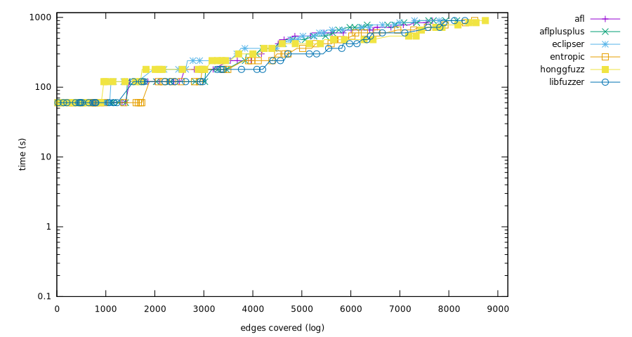 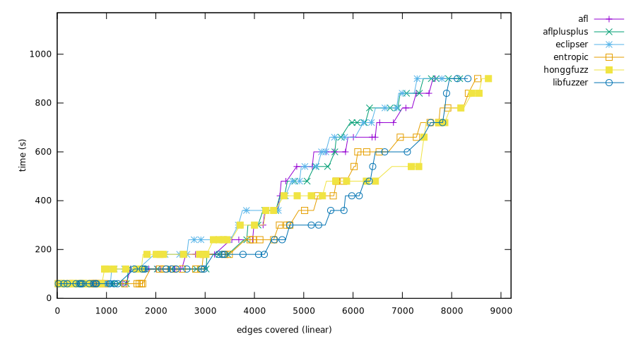
Mann-Whitney U test
re2-2014-12-09
Ranking
- aflplusplus, (28,441 edges covered), success rate: 95.00%(95/100 pairs)
- libfuzzer, (28,439 edges covered), success rate: 92.00%(92/100 pairs)
- eclipser, (28,425 edges covered), success rate: 89.00%(89/100 pairs)
- entropic, (28,048 edges covered), success rate: 84.69%(83/98 pairs)
- honggfuzz, (27,957 edges covered), success rate: 86.87%(86/99 pairs)
- afl, (27,697 edges covered), success rate: 87.88%(87/99 pairs)
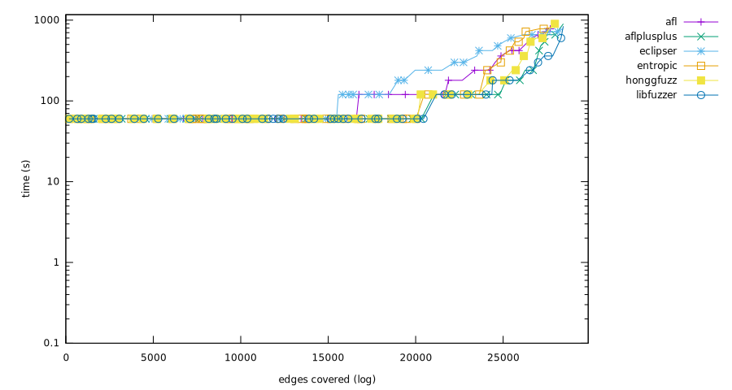 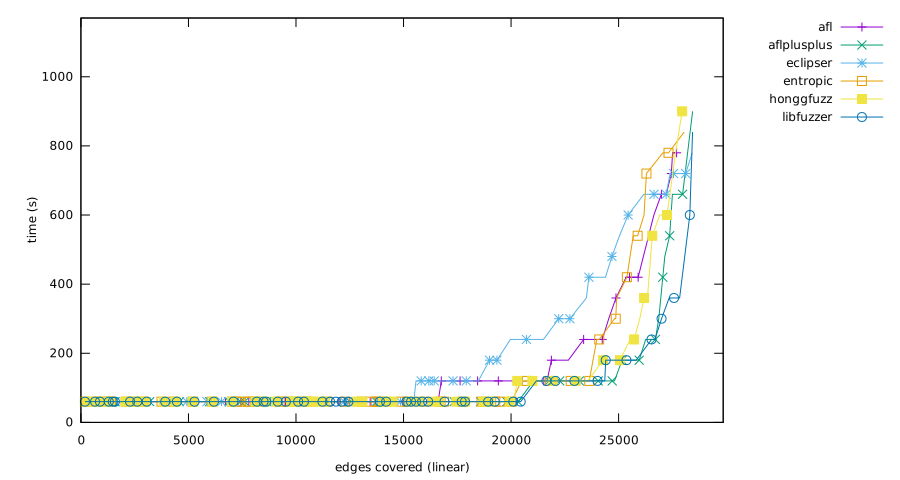
Mann-Whitney U test
sqlite3_ossfuzz
Ranking
- honggfuzz, (82,935 edges covered), success rate: 37.00%(37/100 pairs)
- entropic, (82,450 edges covered), success rate: 38.00%(38/100 pairs)
- eclipser, (82,433 edges covered), success rate: 35.35%(35/99 pairs)
- afl, (81,604 edges covered), success rate: 35.35%(35/99 pairs)
- libfuzzer, (81,577 edges covered), success rate: 35.00%(35/100 pairs)
- aflplusplus, (79,068 edges covered), success rate: 33.00%(33/100 pairs)
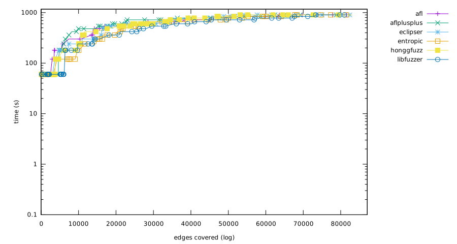 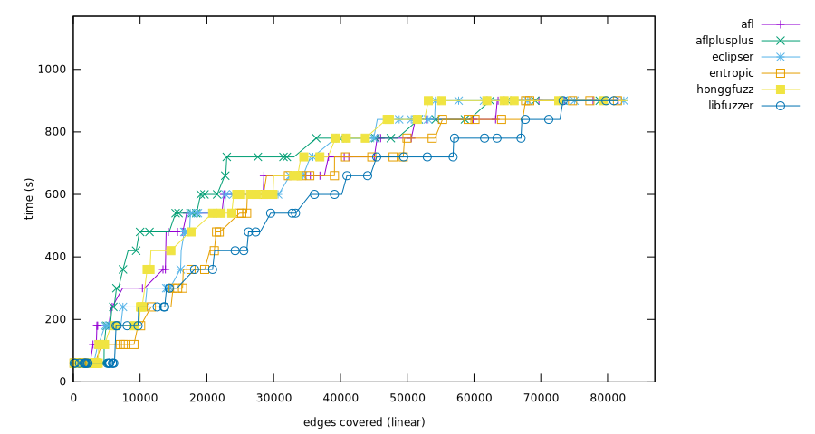
Mann-Whitney U test
systemd_fuzz-link-parser
Ranking
- honggfuzz, (1,492 edges covered), success rate: 39.18%(38/97 pairs)
- entropic, (1,328 edges covered), success rate: 37.00%(37/100 pairs)
- libfuzzer, (1,204 edges covered), success rate: 38.00%(38/100 pairs)
- afl, (1,148 edges covered), success rate: 36.36%(36/99 pairs)
- eclipser, (1,132 edges covered), success rate: 33.33%(33/99 pairs)
- aflplusplus, (1,061 edges covered), success rate: 29.29%(29/99 pairs)
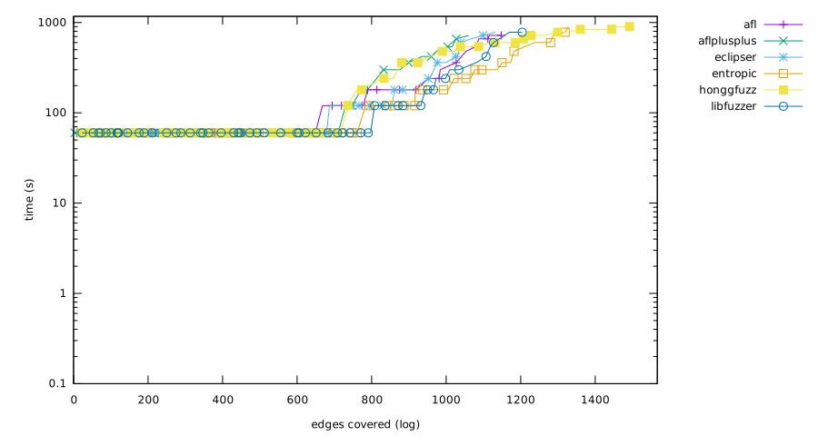 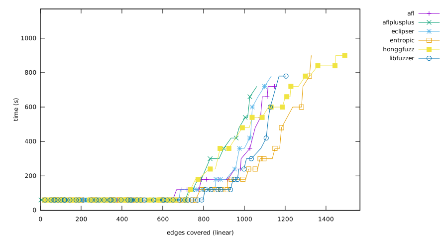
Mann-Whitney U test
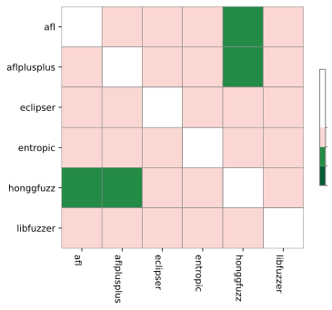
vorbis-2017-12-11
Ranking
- aflplusplus, (6,090 edges covered), success rate: 56.00%(56/100 pairs)
- honggfuzz, (5,639 edges covered), success rate: 49.00%(49/100 pairs)
- entropic, (4,620 edges covered), success rate: 46.46%(46/99 pairs)
- afl, (3,502 edges covered), success rate: 39.00%(39/100 pairs)
- eclipser, (3,485 edges covered), success rate: 39.39%(39/99 pairs)
- libfuzzer, (3,391 edges covered), success rate: 42.42%(42/99 pairs)
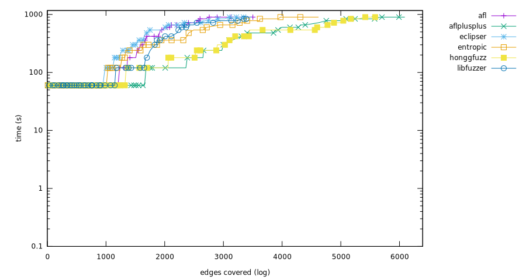 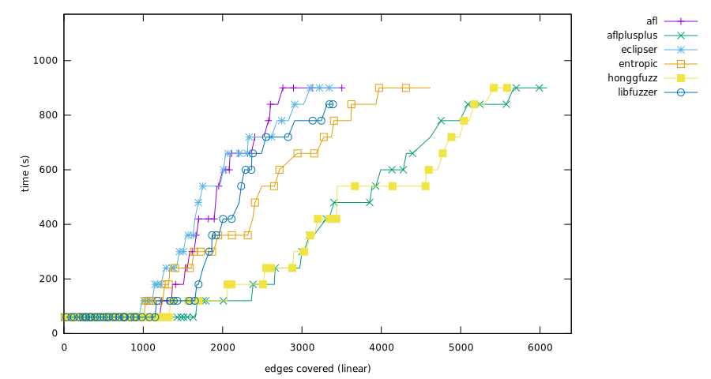
Mann-Whitney U test